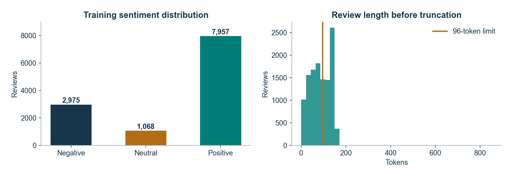

Zouhair Eouichak / TP B / UIR 2026-2027
{
"drugsComTest_raw.tsv": {
"sha256": "1953e81451b3a43f162e3d438dc1f9c2ee83c9283968a19fce4d3736fdb03eac",
"rows": 53766,
"download_source": "https://raw.githubusercontent.com/semnan-university-ai/Drug-Review-Dataset/master/drugsComTest_raw.tsv"
},
"drugsComTrain_raw.tsv": {
"sha256": "83992773f0f42b20b8c9798767e0f2ce5cf3428c721ee56176d65573d76455e4",
"rows": 161297,
"download_source": "https://raw.githubusercontent.com/semnan-university-ai/Drug-Review-Dataset/master/drugsComTrain_raw.tsv"
}
}{
"original": {
"train": 161297,
"test": 53766
},
"removed_test_overlap": 32114,
"cleaned_train": 112225,
"cleaned_test": 16123,
"splits": {
"train": {
"size": 12000,
"classes": {
"0": 2975,
"1": 1068,
"2": 7957
}
},
"validation": {
"size": 2000,
"classes": {
"0": 496,
"1": 178,
"2": 1326
}
},
"test": {
"size": 4000,
"classes": {
"0": 988,
"1": 356,
"2": 2656
}
}
},
"vocabulary": 12000,
"max_length": 96,
"labels": {
"0": "negative (1-4)",
"1": "neutral (5-6)",
"2": "positive (7-10)"
},
"train_truncation_fraction": 0.434
}